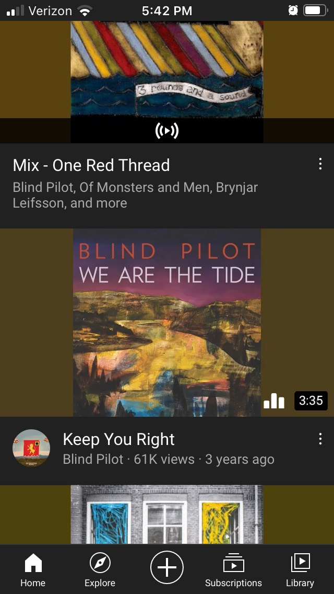
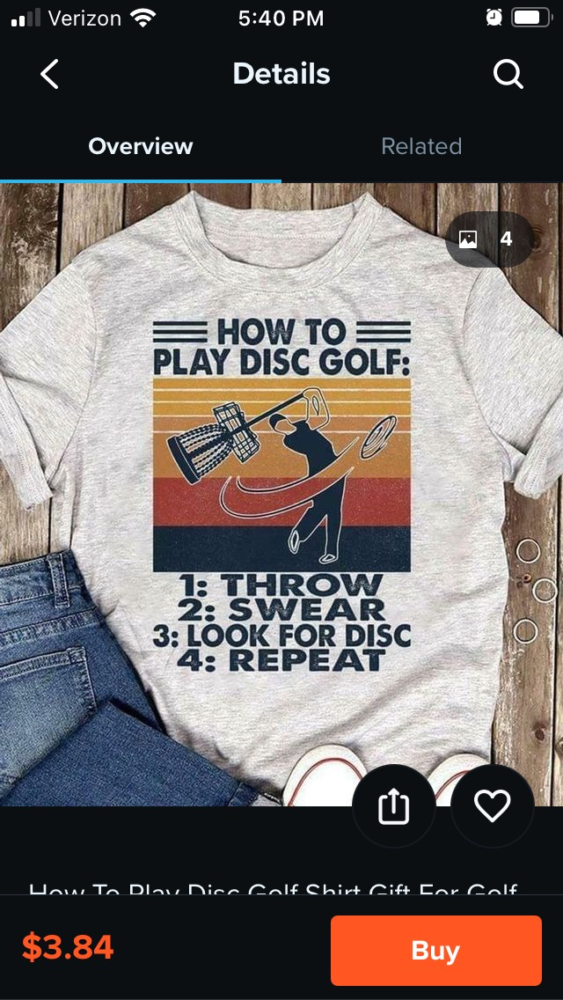

Proximity
BYU-IdahoThis image from BYU-Idaho demonstrates the Proximity principle as it has grouped together items that students aught to be aware of.
Repetition
YouTube
YouTube uses the Repetition principle in desplaying videos and mixes. This helps a user to see when they may be looking at a profile when compared to a video.
Fitt's Law
Wish
Fitt's Law is seen in this image from Wish. The "Buy" button is the most obvious, being large and highlighted. By making it larger and easier to find it becomes easier to use.